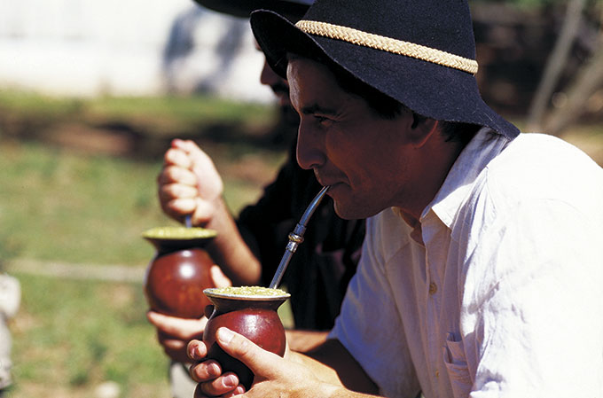
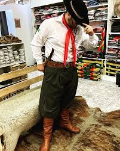

Geral
O nosso país é uma terra de vasta diversidade cultural, onde as tradições locais se entrelaçam em um mosaico de identidades únicas. Entre os estados brasileiros, o Rio Grande do Sul se destaca por sua rica cultura e tradições profundamente enraizadas, que têm encantado não apenas seus habitantes, mas também visitantes de todo o país e do mundo.
O Rio Grande do Sul é um estado que possui uma cultura rica e vibrante, marcada por tradições que resistem ao teste do tempo. O chimarrão, os trajes típicos, o CTG, o churrasco e a gastronomia regional são apenas alguns dos elementos que fazem parte desse rico patrimônio cultural. Conhecer e celebrar a cultura gaúcha é uma maneira de valorizar a diversidade cultural do Brasil e apreciar as preciosas tradições que unem as gerações no coração dos pampas. O Rio Grande do Sul, com sua cultura única e acolhedora, é verdadeiramente um tesouro do Brasil.
O chimarrão e a hospitalidade Gaúcha
Quando se fala em Rio Grande do Sul, é impossível não mencionar o famoso “mate”. Essa bebida à base de erva-mate é mais do que uma simples infusão; é um símbolo da hospitalidade gaúcha e um ritual que une famílias e amigos. O preparo do chimarrão envolve gestos cuidadosos e compartilhar a cuia, passando-a de mão em mão, estreitando os laços entre as pessoas. É comum ver grupos de gaúchos se reunindo para apreciar o chimarrão e trocar histórias de vida, fortalecendo os laços culturais que atravessam gerações.
Os trajes típicos e a tradição do CTG
A indumentária gaúcha é uma das mais icônicas do Brasil. As bombachas, os chapéus, as botas e os lenços fazem parte do traje típico dos gaúchos, que não apenas representam a identidade cultural, mas também refletem a história e a funcionalidade do vestuário dos pampas. Usados originalmente por peões e estancieiros, esses trajes se mantêm vivos e são usados com orgulho em eventos culturais e festivais tradicionalistas.
Uma das instituições mais importantes para a preservação da cultura gaúcha é o Centro de Tradições Gaúchas (CTG). Fundados em diversas cidades do estado, esses centros desempenham um papel crucial na manutenção e difusão das tradições locais. As danças típicas, como o “xote” e a “milonga”, são ensinadas e praticadas nos CTGs, mantendo viva a tradição dos bailes gaúchos.